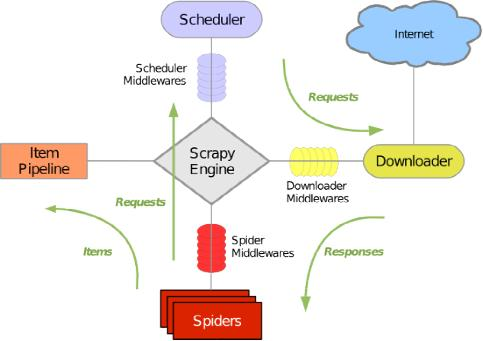
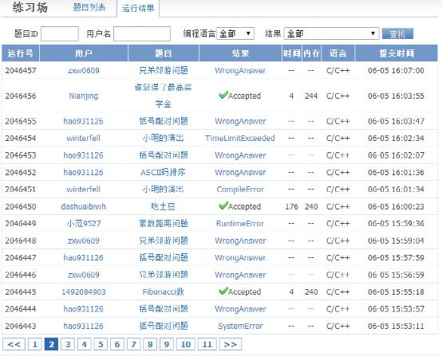
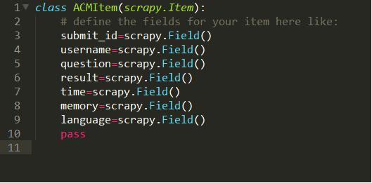
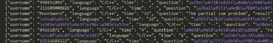
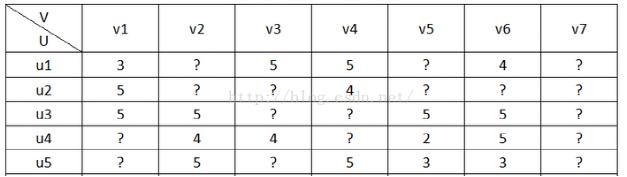
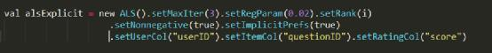

<!DOCTYPE html>
<html>
<head><meta name="generator" content="Hexo 3.9.0">
  <meta charset="utf-8">
  

  
  <title>proTao的大脑具现</title>
  <meta name="viewport" content="width=device-width, initial-scale=1, maximum-scale=1">
  <meta property="og:type" content="website">
<meta property="og:title" content="proTao的大脑具现">
<meta property="og:url" content="https://protao.github.io/page/25/index.html">
<meta property="og:site_name" content="proTao的大脑具现">
<meta property="og:locale" content="zh-CN">
<meta name="twitter:card" content="summary">
<meta name="twitter:title" content="proTao的大脑具现">
  
  
    <link rel="icon" href="/favicon.png">
  
  
    <link href="//fonts.googleapis.com/css?family=Source+Code+Pro" rel="stylesheet" type="text/css">
  
  <link rel="stylesheet" href="../../css/style.css">
  <meta name="baidu-site-verification" content="xerEdoxBbf">
</head>
</html>
<body>
  <div id="container">
    <div id="wrap">
      <header id="header">
<script async src="//busuanzi.ibruce.info/busuanzi/2.3/busuanzi.pure.mini.js"></script>


<script type="text/x-mathjax-config">
MathJax.Hub.Config({
  tex2jax: {inlineMath: [['\\(','\\)'],['$$$','$$$'],['$','$']]}
});
</script>
<script type="text/javascript"
  src="https://cdn.mathjax.org/mathjax/latest/MathJax.js?config=TeX-AMS-MML_HTMLorMML">
</script>

  <div id="banner"></div>
  <div id="header-outer" class="outer">
    <div id="header-title" class="inner">
      <h1 id="logo-wrap">
        <a href="../../index.html" id="logo">proTao的大脑具现</a>
      </h1>
      
    </div>
    <div id="header-inner" class="inner">
      <nav id="main-nav">
        <a id="main-nav-toggle" class="nav-icon"></a>
        
          <a class="main-nav-link" href="../../index.html">home</a>
        
          <a class="main-nav-link" href="../../archives">archives</a>
        
          <a class="main-nav-link" href="../../about">About</a>
        
      </nav>
      <nav id="sub-nav">
        
        <a id="nav-search-btn" class="nav-icon" title="搜索"></a>
      </nav>
      <div id="search-form-wrap">
        <form action="//google.com/search" method="get" accept-charset="UTF-8" class="search-form"><input type="search" name="q" class="search-form-input" placeholder="Search"><button type="submit" class="search-form-submit">&#xF002;</button><input type="hidden" name="sitesearch" value="https://protao.github.io"></form>
      </div>
    </div>
  </div>
</header>

      <div class="outer">
        <section id="main">
  
    

<article id="post-大数据-2017-6-24-numpylearning" class="article article-type-post" itemscope itemprop="blogPost">
  <div class="article-meta">
    <a href="../../2017/06/24/大数据-2017-6-24-numpylearning/" class="article-date">
  <time datetime="2017-06-23T16:00:00.000Z" itemprop="datePublished">2017-06-24</time>
</a>
    
  <div class="article-category">
    <a class="article-category-link" href="../../categories/大数据/">大数据</a>
  </div>

  </div>
  <div class="article-inner">
    
    
      <header class="article-header">
        
  
    <h1 itemprop="name">
      <a class="article-title" href="../../2017/06/24/大数据-2017-6-24-numpylearning/">numpy学习</a>
    </h1>
  
 
      </header>
    
    <div class="article-entry" itemprop="articleBody">
      
        <h2 id="Numpy"><a href="#Numpy" class="headerlink" title="Numpy"></a>Numpy</h2><h3 id="学习动机"><a href="#学习动机" class="headerlink" title="学习动机"></a>学习动机</h3><p>哪哪都用numpy！python数据处理不可能用不到他！</p>
<h3 id="概览"><a href="#概览" class="headerlink" title="概览"></a>概览</h3><ul>
<li><p>核心类型是<strong>ndarray对象</strong>！</p>
</li>
<li><p>ndarray数组大小不可变（<em>更改ndarray的大小将创建一个新的数组并删除原始数据</em>），封装了同质数据类型的n维数组。同质要求数组中存储相同的数据类型（<em>这使得在存储器中他们将具有相同的大小</em>）。<strong>但是可以通过使用对象类型的数组来间接打破这一限制。</strong></p>
</li>
<li>udarray的优势在于以python的代码长度达到c的运行速度，做到这一点的技术支持是NumPy内部预编译的c实现。这反映它的大部分功能的基础：<strong>矢量化和广播</strong>。</li>
<li>矢量化描述了在代码中没有任何显式循环:</li>
<li>广播就是指对矢量进行的操作“广播”至他的每一个元素。</li>
</ul>
<h3 id="基础"><a href="#基础" class="headerlink" title="基础"></a>基础</h3><h4 id="数据类型"><a href="#数据类型" class="headerlink" title="数据类型"></a>数据类型</h4><p>数据类型如下图：<br></p>
<ul>
<li>很多构造函数可以显示指定数据类型，如<code>arange(7,dtype=uint16)</code></li>
<li>大部分类型之间可以强制类型转换，如：<code>float64()</code>,复数的类型转换会受到限制。</li>
<li>由于ndarray的同质性，可以方便的计算ndarray的占用空间，也可以使用<code>a.dtype.itemsize</code>查看内个数组元素在内存中占用的字节数。</li>
<li>numpy的数据类型是dtype类，这个类也有属于自己的方法和属性。</li>
</ul>
<h4 id="ndarray数组"><a href="#ndarray数组" class="headerlink" title="ndarray数组"></a>ndarray数组</h4>
        
          <p class="article-more-link">
            <a href="../../2017/06/24/大数据-2017-6-24-numpylearning/#more">Read More</a>
          </p>
        
      
    </div>
    <footer class="article-footer">
      <a data-url="https://protao.github.io/2017/06/24/大数据-2017-6-24-numpylearning/" data-id="cjxo5e6r2003nz16daz63qm1u" class="article-share-link">Share</a>
      
      
  <ul class="article-tag-list"><li class="article-tag-list-item"><a class="article-tag-list-link" href="../../tags/bigdata/">bigdata</a></li><li class="article-tag-list-item"><a class="article-tag-list-link" href="../../tags/numpy/">numpy</a></li><li class="article-tag-list-item"><a class="article-tag-list-link" href="../../tags/python/">python</a></li></ul>

    </footer>
  </div>
  
</article>


  
    

<article id="post-机器学习-2017-6-21-crf" class="article article-type-post" itemscope itemprop="blogPost">
  <div class="article-meta">
    <a href="../../2017/06/21/机器学习-2017-6-21-crf/" class="article-date">
  <time datetime="2017-06-20T16:00:00.000Z" itemprop="datePublished">2017-06-21</time>
</a>
    
  <div class="article-category">
    <a class="article-category-link" href="../../categories/机器学习/">机器学习</a>
  </div>

  </div>
  <div class="article-inner">
    
    
      <header class="article-header">
        
  
    <h1 itemprop="name">
      <a class="article-title" href="../../2017/06/21/机器学习-2017-6-21-crf/">使用CRF++进行分词</a>
    </h1>
  
 
      </header>
    
    <div class="article-entry" itemprop="articleBody">
      
        <h2 id="安装CRF"><a href="#安装CRF" class="headerlink" title="安装CRF++"></a>安装CRF++</h2><p>在这里下载<a href="https://sourceforge.net/projects/crfpp/files/crfpp/0.54/CRF%2B%2B-0.54.tar.gz/download" target="_blank" rel="noopener">CRF++源码</a></p>
<figure class="highlight bash"><table><tr><td class="gutter"><pre><span class="line">1</span><br><span class="line">2</span><br><span class="line">3</span><br><span class="line">4</span><br><span class="line">5</span><br><span class="line">6</span><br><span class="line">7</span><br><span class="line">8</span><br></pre></td><td class="code"><pre><span class="line">tar zxvf CRF++-0.58.tar.gz</span><br><span class="line"><span class="built_in">cd</span> CRF++-0.58</span><br><span class="line">./configure</span><br><span class="line">make <span class="comment"># 如果path.h报错 加上#inlcude&lt;iostream&gt;头文件</span></span><br><span class="line">sudo make install</span><br><span class="line"><span class="built_in">cd</span> python</span><br><span class="line">python setup.py build</span><br><span class="line">sudo python setup.py install</span><br></pre></td></tr></table></figure>
<p>然后进入python，尝试<code>import CRFPP</code>可能出现问题：<code>UnboundLocalError: local variable &#39;fp&#39; referenced before assignment</code>，原因就是fp没有定义，添加<code>fp = None</code>。改动之后再次执行又出现问题：<code>ImportError: No module named _CRFPP</code>，那么就对ImportException进行处理，截至到这里，把CRFPP.py中的<code>swig_import_helper</code>函数改动如下：</p>
<figure class="highlight python"><table><tr><td class="gutter"><pre><span class="line">1</span><br><span class="line">2</span><br><span class="line">3</span><br><span class="line">4</span><br><span class="line">5</span><br><span class="line">6</span><br><span class="line">7</span><br><span class="line">8</span><br><span class="line">9</span><br><span class="line">10</span><br><span class="line">11</span><br><span class="line">12</span><br><span class="line">13</span><br><span class="line">14</span><br></pre></td><td class="code"><pre><span class="line"><span class="function"><span class="keyword">def</span> <span class="title">swig_import_helper</span><span class="params">()</span>:</span></span><br><span class="line">    <span class="keyword">from</span> os.path <span class="keyword">import</span> dirname</span><br><span class="line">    <span class="keyword">import</span> imp</span><br><span class="line">    fp = <span class="keyword">None</span></span><br><span class="line">    <span class="keyword">try</span>:</span><br><span class="line">        fp, pathname, description = imp.find_module(<span class="string">'_CRFPP'</span>, [dirname(__file__)])</span><br><span class="line">        _mod = imp.load_module(<span class="string">'_CRFPP'</span>, fp, pathname, description)</span><br><span class="line">    <span class="keyword">except</span> ImportError:</span><br><span class="line">        <span class="keyword">import</span> _CRFPP</span><br><span class="line">        <span class="keyword">return</span> _CRFPP</span><br><span class="line">    <span class="keyword">finally</span>:</span><br><span class="line">&lt;!-- more --&gt;</span><br><span class="line">        <span class="keyword">if</span> fp <span class="keyword">is</span> <span class="keyword">not</span> <span class="keyword">None</span>: fp.close()</span><br><span class="line">    <span class="keyword">return</span> _mod</span><br></pre></td></tr></table></figure>
<p>然后再运行,又会出现问题：<code>ImportError: libcrfpp.so.0: cannot open shared object file: No such file or directory</code>，这次回到shell执行：</p>
<figure class="highlight bash"><table><tr><td class="gutter"><pre><span class="line">1</span><br></pre></td><td class="code"><pre><span class="line">sudo ln -s /usr/<span class="built_in">local</span>/lib/libcrfpp.so.0 /usr/lib</span><br></pre></td></tr></table></figure>
<p>此时再次import，成功执行。</p>
<h2 id="下载人民日报语料库"><a href="#下载人民日报语料库" class="headerlink" title="下载人民日报语料库"></a>下载人民日报语料库</h2><p><a href="https://code.google.com/archive/p/nlpbamboo/downloads" target="_blank" rel="noopener">点击下载</a><br>下载得到的语料已经经过分词和词性标注，形如：</p>
<blockquote>
<p>19980101-01-001-005/m  同胞/n  们/k  、/w  朋友/n  们/k  、/w  女士/n  们/k  、/w  先生/n  们/k  ：/w<br>19980101-01-001-006/m  在/p  １９９８年/t  来临/v  之际/f  ，/w  我/r  十分/m  高兴/a  地/u  通过/p  [中央/n  人民/n  广播/vn  电台/n]nt  、/w  [中国/ns  国际/n  广播/vn  电台/n]nt  和/c  [中央/n  电视台/n]nt  ，/w  向/p  全国/n  各族/r  人民/n  ，/w  向/p  [香港/ns  特别/a  行政区/n]ns  同胞/n  、/w  澳门/ns  和/c  台湾/ns  同胞/n  、/w  海外/s  侨胞/n  ，/w  向/p  世界/n  各国/r  的/u  朋友/n  们/k  ，/w  致以/v  诚挚/a  的/u  问候/vn  和/c  良好/a  的/u  祝愿/vn  ！/w</p>
</blockquote>
<h2 id="对预标注预料进行预处理，使用下面的Python脚本“pre-py”"><a href="#对预标注预料进行预处理，使用下面的Python脚本“pre-py”" class="headerlink" title="对预标注预料进行预处理，使用下面的Python脚本“pre.py”"></a>对预标注预料进行预处理，使用下面的Python脚本“pre.py”</h2><figure class="highlight python"><table><tr><td class="gutter"><pre><span class="line">1</span><br><span class="line">2</span><br><span class="line">3</span><br><span class="line">4</span><br><span class="line">5</span><br><span class="line">6</span><br><span class="line">7</span><br><span class="line">8</span><br><span class="line">9</span><br><span class="line">10</span><br><span class="line">11</span><br><span class="line">12</span><br><span class="line">13</span><br><span class="line">14</span><br><span class="line">15</span><br><span class="line">16</span><br><span class="line">17</span><br><span class="line">18</span><br><span class="line">19</span><br><span class="line">20</span><br><span class="line">21</span><br><span class="line">22</span><br><span class="line">23</span><br><span class="line">24</span><br><span class="line">25</span><br><span class="line">26</span><br><span class="line">27</span><br><span class="line">28</span><br><span class="line">29</span><br><span class="line">30</span><br><span class="line">31</span><br><span class="line">32</span><br><span class="line">33</span><br><span class="line">34</span><br><span class="line">35</span><br><span class="line">36</span><br><span class="line">37</span><br><span class="line">38</span><br><span class="line">39</span><br><span class="line">40</span><br><span class="line">41</span><br><span class="line">42</span><br><span class="line">43</span><br><span class="line">44</span><br><span class="line">45</span><br><span class="line">46</span><br><span class="line">47</span><br><span class="line">48</span><br><span class="line">49</span><br><span class="line">50</span><br><span class="line">51</span><br><span class="line">52</span><br><span class="line">53</span><br><span class="line">54</span><br><span class="line">55</span><br><span class="line">56</span><br><span class="line">57</span><br><span class="line">58</span><br><span class="line">59</span><br><span class="line">60</span><br><span class="line">61</span><br><span class="line">62</span><br><span class="line">63</span><br><span class="line">64</span><br><span class="line">65</span><br><span class="line">66</span><br><span class="line">67</span><br><span class="line">68</span><br><span class="line">69</span><br><span class="line">70</span><br><span class="line">71</span><br><span class="line">72</span><br><span class="line">73</span><br><span class="line">74</span><br><span class="line">75</span><br><span class="line">76</span><br><span class="line">77</span><br><span class="line">78</span><br><span class="line">79</span><br><span class="line">80</span><br><span class="line">81</span><br><span class="line">82</span><br><span class="line">83</span><br><span class="line">84</span><br><span class="line">85</span><br><span class="line">86</span><br><span class="line">87</span><br><span class="line">88</span><br><span class="line">89</span><br><span class="line">90</span><br><span class="line">91</span><br><span class="line">92</span><br><span class="line">93</span><br><span class="line">94</span><br><span class="line">95</span><br><span class="line">96</span><br><span class="line">97</span><br><span class="line">98</span><br><span class="line">99</span><br><span class="line">100</span><br><span class="line">101</span><br><span class="line">102</span><br><span class="line">103</span><br><span class="line">104</span><br><span class="line">105</span><br><span class="line">106</span><br><span class="line">107</span><br><span class="line">108</span><br><span class="line">109</span><br><span class="line">110</span><br><span class="line">111</span><br><span class="line">112</span><br><span class="line">113</span><br><span class="line">114</span><br><span class="line">115</span><br><span class="line">116</span><br><span class="line">117</span><br><span class="line">118</span><br><span class="line">119</span><br><span class="line">120</span><br><span class="line">121</span><br><span class="line">122</span><br><span class="line">123</span><br><span class="line">124</span><br><span class="line">125</span><br><span class="line">126</span><br><span class="line">127</span><br><span class="line">128</span><br></pre></td><td class="code"><pre><span class="line"><span class="comment">#coding=utf8</span></span><br><span class="line"></span><br><span class="line"><span class="keyword">import</span> sys</span><br><span class="line"></span><br><span class="line">home_dir = <span class="string">"./"</span></span><br><span class="line"><span class="function"><span class="keyword">def</span> <span class="title">splitWord</span><span class="params">(words)</span>:</span></span><br><span class="line">    uni = words.decode(<span class="string">'utf-8'</span>)</span><br><span class="line">    li = list()</span><br><span class="line">    <span class="keyword">for</span> u <span class="keyword">in</span> uni:</span><br><span class="line">        li.append(u.encode(<span class="string">'utf-8'</span>))</span><br><span class="line">    <span class="keyword">return</span> li</span><br><span class="line"></span><br><span class="line"><span class="comment">#4 tag</span></span><br><span class="line"></span><br><span class="line"><span class="comment">#S/B/E/M</span></span><br><span class="line"><span class="function"><span class="keyword">def</span> <span class="title">get4Tag</span><span class="params">(li)</span>:</span></span><br><span class="line">    length = len(li)</span><br><span class="line">    <span class="comment">#print length</span></span><br><span class="line">    <span class="keyword">if</span> length   == <span class="number">1</span>:</span><br><span class="line">        <span class="keyword">return</span> [<span class="string">'S'</span>]</span><br><span class="line">    <span class="keyword">elif</span> length == <span class="number">2</span>:</span><br><span class="line">        <span class="keyword">return</span> [<span class="string">'B'</span>,<span class="string">'E'</span>]</span><br><span class="line">    <span class="keyword">elif</span> length &gt; <span class="number">2</span>:</span><br><span class="line">        li = list()</span><br><span class="line">        li.append(<span class="string">'B'</span>)</span><br><span class="line">    <span class="keyword">for</span> i <span class="keyword">in</span> range(<span class="number">0</span>,length<span class="number">-2</span>):</span><br><span class="line">        li.append(<span class="string">'M'</span>)</span><br><span class="line">    li.append(<span class="string">'E'</span>)</span><br><span class="line">    <span class="keyword">return</span> li</span><br><span class="line"><span class="comment">#6 tag</span></span><br><span class="line"><span class="comment">#S/B/E/M/M1/M2</span></span><br><span class="line"><span class="function"><span class="keyword">def</span> <span class="title">get6Tag</span><span class="params">(li)</span>:</span></span><br><span class="line">    length = len(li)</span><br><span class="line">    <span class="comment">#print length</span></span><br><span class="line">    <span class="keyword">if</span> length   == <span class="number">1</span>:</span><br><span class="line">        <span class="keyword">return</span> [<span class="string">'S'</span>]</span><br><span class="line">    <span class="keyword">elif</span> length == <span class="number">2</span>:</span><br><span class="line">        <span class="keyword">return</span> [<span class="string">'B'</span>,<span class="string">'E'</span>]</span><br><span class="line">    <span class="keyword">elif</span> length == <span class="number">3</span>:</span><br><span class="line">        <span class="keyword">return</span> [<span class="string">'B'</span>,<span class="string">'M'</span>,<span class="string">'E'</span>]</span><br><span class="line">    <span class="keyword">elif</span> length == <span class="number">4</span>:</span><br><span class="line">        <span class="keyword">return</span> [<span class="string">'B'</span>,<span class="string">'M1'</span>,<span class="string">'M'</span>,<span class="string">'E'</span>]</span><br><span class="line">    <span class="keyword">elif</span> length == <span class="number">5</span>:</span><br><span class="line">        <span class="keyword">return</span> [<span class="string">'B'</span>,<span class="string">'M1'</span>,<span class="string">'M2'</span>,<span class="string">'M'</span>,<span class="string">'E'</span>]</span><br><span class="line">    <span class="keyword">elif</span> length &gt; <span class="number">5</span>:</span><br><span class="line">        li = list()</span><br><span class="line">        li.append(<span class="string">'B'</span>)</span><br><span class="line">        li.append(<span class="string">'M1'</span>)</span><br><span class="line">        li.append(<span class="string">'M2'</span>)</span><br><span class="line">    <span class="keyword">for</span> i <span class="keyword">in</span> range(<span class="number">0</span>,length<span class="number">-4</span>):</span><br><span class="line">        li.append(<span class="string">'M'</span>)</span><br><span class="line">    li.append(<span class="string">'E'</span>)</span><br><span class="line">    <span class="keyword">return</span> li</span><br><span class="line"></span><br><span class="line"><span class="function"><span class="keyword">def</span> <span class="title">saveDataFile</span><span class="params">(trainobj,testobj,isTest,word,handle,tag)</span>:</span></span><br><span class="line">    <span class="keyword">if</span> isTest:</span><br><span class="line">        saveTrainFile(testobj,word,handle,tag)</span><br><span class="line">    <span class="keyword">else</span>:</span><br><span class="line">        saveTrainFile(trainobj,word,handle,tag)</span><br><span class="line"></span><br><span class="line"><span class="function"><span class="keyword">def</span> <span class="title">saveTrainFile</span><span class="params">(fiobj,word,handle,tag)</span>:</span> </span><br><span class="line">    <span class="keyword">if</span> len(word) &gt; <span class="number">0</span>:</span><br><span class="line">        wordli = splitWord(word)</span><br><span class="line">        <span class="keyword">if</span> tag == <span class="string">'4'</span>:</span><br><span class="line">            tagli = get4Tag(wordli)</span><br><span class="line">        <span class="keyword">if</span> tag == <span class="string">'6'</span>:</span><br><span class="line">            tagli = get6Tag(wordli)</span><br><span class="line">        <span class="keyword">for</span> i <span class="keyword">in</span> range(<span class="number">0</span>,len(wordli)):</span><br><span class="line">            w = wordli[i]</span><br><span class="line">            h = handle</span><br><span class="line">            t = tagli[i]</span><br><span class="line">            fiobj.write(w + <span class="string">'\t'</span> + h + <span class="string">'\t'</span> + t + <span class="string">'\n'</span>)</span><br><span class="line">    <span class="keyword">else</span>:</span><br><span class="line">    <span class="comment">#print 'New line'</span></span><br><span class="line">        fiobj.write(<span class="string">'\n'</span>)</span><br><span class="line"></span><br><span class="line"><span class="comment">#B,M,M1,M2,M3,E,S</span></span><br><span class="line"><span class="function"><span class="keyword">def</span> <span class="title">convertTag</span><span class="params">(tag)</span>:</span></span><br><span class="line">    fiobj    = open( home_dir + <span class="string">'people-daily.txt'</span>,<span class="string">'r'</span>)</span><br><span class="line">    trainobj = open( home_dir + tag + <span class="string">'.train.data'</span>,<span class="string">'w'</span> )</span><br><span class="line">    testobj  = open( home_dir + tag + <span class="string">'.test.data'</span>,<span class="string">'w'</span>)</span><br><span class="line"></span><br><span class="line">    arr = fiobj.readlines()</span><br><span class="line">    i = <span class="number">0</span></span><br><span class="line">    <span class="keyword">for</span> a <span class="keyword">in</span> arr:</span><br><span class="line">        i += <span class="number">1</span></span><br><span class="line">        a = a.strip(<span class="string">'\r\n\t '</span>)</span><br><span class="line">        <span class="keyword">print</span> <span class="string">"debug_a:"</span>,a </span><br><span class="line">        <span class="keyword">if</span> a==<span class="string">""</span>:<span class="keyword">continue</span></span><br><span class="line">        words = a.split(<span class="string">" "</span>)</span><br><span class="line">        test = <span class="keyword">False</span></span><br><span class="line">        <span class="keyword">if</span> i % <span class="number">10</span> == <span class="number">0</span>:</span><br><span class="line">            test = <span class="keyword">True</span></span><br><span class="line">        <span class="keyword">for</span> word <span class="keyword">in</span> words:</span><br><span class="line">            <span class="keyword">print</span> <span class="string">"----&gt;"</span>, word</span><br><span class="line">            word = word.strip(<span class="string">'\t'</span>)</span><br><span class="line">            <span class="keyword">if</span> len(word) &gt; <span class="number">0</span>:</span><br><span class="line">                i1 = word.find(<span class="string">'['</span>)</span><br><span class="line">                <span class="keyword">if</span> i1 &gt;= <span class="number">0</span>:</span><br><span class="line">                    word = word[i1+<span class="number">1</span>:]</span><br><span class="line">                i2 = word.find(<span class="string">']'</span>)</span><br><span class="line">                <span class="keyword">if</span> i2 &gt; <span class="number">0</span>:</span><br><span class="line">                    w = word[:i2]</span><br><span class="line">                word_hand = word.split(<span class="string">'/'</span>)</span><br><span class="line">                <span class="keyword">print</span> <span class="string">"----"</span>,word</span><br><span class="line">                w,h = word_hand</span><br><span class="line">                <span class="comment">#print w,h</span></span><br><span class="line">                <span class="keyword">if</span> h == <span class="string">'nr'</span>:    <span class="comment">#ren min</span></span><br><span class="line">                    <span class="comment">#print 'NR',w</span></span><br><span class="line">                    <span class="keyword">if</span> w.find(<span class="string">'·'</span>) &gt;= <span class="number">0</span>:</span><br><span class="line">                        tmpArr = w.split(<span class="string">'·'</span>)</span><br><span class="line">                        <span class="keyword">for</span> tmp <span class="keyword">in</span> tmpArr:</span><br><span class="line">                            saveDataFile(trainobj,testobj,test,tmp,h,tag)</span><br><span class="line">                    <span class="keyword">continue</span></span><br><span class="line">                <span class="keyword">if</span> h != <span class="string">'m'</span>:</span><br><span class="line">                   saveDataFile(trainobj,testobj,test,w,h,tag)</span><br><span class="line">                <span class="keyword">if</span> h == <span class="string">'w'</span>:</span><br><span class="line">                    saveDataFile(trainobj,testobj,test,<span class="string">""</span>,<span class="string">""</span>,tag) <span class="comment">#split</span></span><br><span class="line"></span><br><span class="line">    trainobj.flush()</span><br><span class="line">    testobj.flush()</span><br><span class="line"></span><br><span class="line"><span class="keyword">if</span> __name__ == <span class="string">'__main__'</span>:</span><br><span class="line">    <span class="keyword">if</span> len(sys.argv) &lt; <span class="number">2</span>:</span><br><span class="line">        <span class="keyword">print</span> <span class="string">'tag[6,4] convert raw data to train.data and tag.test.data'</span></span><br><span class="line">    <span class="keyword">else</span>:</span><br><span class="line">        tag = sys.argv[<span class="number">1</span>]</span><br><span class="line">        convertTag(tag)</span><br></pre></td></tr></table></figure>
<p>这里用到的分词方法是由字构词(基于字标注)的分词方法(Character-based tagging)。<br>该方法由N. Xue(薛念文) 和 S. Converse 提出, 首篇论文发表在2002年第一届国际计算语言学学会(ACL)汉语特别兴趣小组 SIGHAN (<a href="http://www.sighan.org/" target="_blank" rel="noopener">http://www.sighan.org/</a>) 组织的汉语分词评测研讨会上[Xue and Converse, 2002]。基本思想:将分词过程看作是字的分类问题:每个字在构造一个特定的词语时都占据着一个确定的构词位置(即词位)。一般情况下,每个字只有4个词位:词首(B)、词中(M)、词尾(E)和单独成词(S) 。<br>该脚本接受一个参数，该参数只能是6或者4，参数为4的时候将单字对应到上述4类标签，参数为6的时候实际上是对上述4tags的一种扩展，词中字可能有$$$M_1/M_2/M$$$三种标签，三个字的词标记为$$$BME$$$，四个字标记为$$$BM_1ME$$$，五个字标记为$$$BM_1M_2ME$$$，以此类推。这是一种拓展的思路，条件随机场只是去预测标签，究竟设置什么样的标签，标签有什么意义，是要靠人工赋予。<br>得到下面的格式,第一列是单字，第二列是词性信息，第三列是基于字标注的分词信息：</p>
<blockquote>
<pre><code>迈    v    B
向    v    E
充    v    B
满    v    E
希    n    B
望    n    E
的    u    S
新    a    S
世    n    B
纪    n    E
—    w    B
—    w    E
一    t    B
九    t    M1
九    t    M2
八    t    M
年    t    E
新    t    B
年    t    E
讲    n    B
话    n    E
（    w    S
附    v    S
图    n    B
片    n    E
张    q    S
）    w    S
</code></pre></blockquote>
<h2 id="使用CRF-进行训练和预测"><a href="#使用CRF-进行训练和预测" class="headerlink" title="使用CRF++进行训练和预测"></a>使用CRF++进行训练和预测</h2><h3 id="自定义特征模板template"><a href="#自定义特征模板template" class="headerlink" title="自定义特征模板template"></a>自定义特征模板template</h3><figure class="highlight plain"><table><tr><td class="gutter"><pre><span class="line">1</span><br><span class="line">2</span><br><span class="line">3</span><br><span class="line">4</span><br><span class="line">5</span><br><span class="line">6</span><br><span class="line">7</span><br><span class="line">8</span><br><span class="line">9</span><br><span class="line">10</span><br><span class="line">11</span><br><span class="line">12</span><br><span class="line">13</span><br><span class="line">14</span><br><span class="line">15</span><br><span class="line">16</span><br><span class="line">17</span><br><span class="line">18</span><br><span class="line">19</span><br><span class="line">20</span><br><span class="line">21</span><br><span class="line">22</span><br><span class="line">23</span><br><span class="line">24</span><br><span class="line">25</span><br><span class="line">26</span><br><span class="line">27</span><br><span class="line">28</span><br><span class="line">29</span><br><span class="line">30</span><br></pre></td><td class="code"><pre><span class="line"># Unigram</span><br><span class="line">U00:%x[-2,0]</span><br><span class="line">U01:%x[-1,0]</span><br><span class="line">U02:%x[0,0]</span><br><span class="line">U03:%x[1,0]</span><br><span class="line">U04:%x[2,0]</span><br><span class="line">U05:%x[-2,0]/%x[-1,0]/%x[0,0]</span><br><span class="line">U06:%x[-1,0]/%x[0,0]/%x[1,0]</span><br><span class="line">U07:%x[0,0]/%x[1,0]/%x[2,0]</span><br><span class="line">U08:%x[-1,0]/%x[0,0]</span><br><span class="line">U09:%x[0,0]/%x[1,0]</span><br><span class="line"> </span><br><span class="line">U10:%x[-2,1]</span><br><span class="line">U11:%x[-1,1]</span><br><span class="line">U12:%x[0,1]</span><br><span class="line">U13:%x[1,1]</span><br><span class="line">U14:%x[2,1]</span><br><span class="line"> </span><br><span class="line">U15:%x[-1,0]/%x[1,0]</span><br><span class="line">U16:%x[-1,1]/%x[1,1]</span><br><span class="line"> </span><br><span class="line">U17:%x[-1,1]/%x[0,1]</span><br><span class="line">U18:%x[0,1]/%x[1,1]</span><br><span class="line"> </span><br><span class="line">U19:%x[-2,1]/%x[-1,1]/%x[0,1]</span><br><span class="line">U20:%x[-1,1]/%x[0,1]/%x[1,1]</span><br><span class="line">U21:%x[0,1]/%x[1,1]/%x[2,1]</span><br><span class="line"> </span><br><span class="line"># Bigram</span><br><span class="line">B</span><br></pre></td></tr></table></figure>
<p>CRF++有两种模板类型：</p>
<ol>
<li><p>Unigram类型</p>
<p> 每一行%x[#,#]生成一个CRFs中的点(state)函数: f(s, o), 其中s为t时刻的的标签(output)，o为t时刻的上下文.如CRF++说明文件中的示例函数:</p>
<blockquote>
<p><em>func1 = if (output = B-NP and feature=”U01:DT”) return 1 else return 0</em></p>
</blockquote>
<p> 它是由U01:%x[0,1]在输入文件的第一行生成的点函数.将输入文件的第一行”代入”到函数中,函数返回1,同时,如果输入文件的某一行在第2列也是DT,并且它的output同样也为B-NP,那么这个函数在这一行也返回1.</p>
</li>
<li><p>Bigram类型</p>
<p> 每一行%x[#,#]生成一个CRFs中的边(Edge)函数:f(s’, s, o), 其中s’为t - 1时刻的标签.也就是说,Bigram类型与Unigram大致机同,只是还要考虑到t - 1时刻的标签.如果只写一个U的话,默认生成f(s’, s).</p>
<p> 模板文件中的每一行是一个模板。每个模板都是由%x[row,col]来指定输入数据中的一个token。row指定到当前token的行偏移，col指定列位置。</p>
</li>
</ol>
<h3 id="训练模型"><a href="#训练模型" class="headerlink" title="训练模型"></a>训练模型</h3><h4 id="训练"><a href="#训练" class="headerlink" title="训练"></a>训练</h4><figure class="highlight bash"><table><tr><td class="gutter"><pre><span class="line">1</span><br></pre></td><td class="code"><pre><span class="line">crf_learn template_file train_file model_file</span><br></pre></td></tr></table></figure>
<pre><code>这个训练过程的时间、迭代次数等信息会输出到控制台上（感觉上是crf_learn程序的输出信息到标准输出流上了），如果想保存这些信息，我们可以将这些标准输出流到文件上，命令格式如下：
</code></pre><figure class="highlight bash"><table><tr><td class="gutter"><pre><span class="line">1</span><br></pre></td><td class="code"><pre><span class="line">crf_learn template_file train_file model_file &gt;&gt; train_info_file</span><br></pre></td></tr></table></figure>
<p>输出的信息如下。其中各个域的信息是：</p>
<ul>
<li>iter: 迭代处理的次数</li>
<li>terr: 标记错误率。</li>
<li>serr: 句子错误率。</li>
<li>obj: 目标函数的值。</li>
<li>diff: 目标函数相对上一次的相对变化率。</li>
</ul>
<figure class="highlight bash"><table><tr><td class="gutter"><pre><span class="line">1</span><br><span class="line">2</span><br><span class="line">3</span><br><span class="line">4</span><br><span class="line">5</span><br><span class="line">6</span><br><span class="line">7</span><br><span class="line">8</span><br><span class="line">9</span><br><span class="line">10</span><br></pre></td><td class="code"><pre><span class="line">Number of sentences: 155657</span><br><span class="line">Number of features:  16586178</span><br><span class="line">Number of thread(s): 1</span><br><span class="line">Freq:                1</span><br><span class="line">eta:                 0.00010</span><br><span class="line">C:                   1.00000</span><br><span class="line">shrinking size:      20</span><br><span class="line">iter=0 terr=0.67485 serr=1.00000 act=16586178 obj=2754679.67614 diff=1.00000</span><br><span class="line">iter=1 terr=0.39541 serr=0.67567 act=16586178 obj=2148688.44746 diff=0.21999</span><br><span class="line">iter=2 terr=0.39131 serr=0.67553 act=16586178 obj=1564786.70817 diff=0.27175</span><br></pre></td></tr></table></figure>
<p>对于其中的参数，有四个主要的参数可以调整：</p>
<ol>
<li><p><code>-a CRF-L2 or CRF-L1</code></p>
<p> 规范化算法选择。默认是CRF-L2。一般来说L2算法效果要比L1算法稍微好一点，虽然L1算法中非零特征的数值要比L2中大幅度的小。</p>
</li>
<li><p><code>-c float</code></p>
<p> 这个参数设置CRF的hyper-parameter。c的数值越大，CRF拟合训练数据的程度越高。这个参数可以调整过度拟合和不拟合之间的平衡度。这个参数可以通过交叉验证等方法寻找较优的参数。</p>
</li>
<li><p><code>-f NUM</code></p>
<p> 这个参数设置特征的cut-off threshold。CRF++使用训练数据中至少NUM次出现的特征。默认值为1。当使用CRF++到大规模数据时，只出现一次的特征可能会有几百万，这个选项就会在这样的情况下起到作用。</p>
</li>
<li><p><code>-p NUM</code></p>
<p> 如果电脑有多个CPU，那么那么可以通过多线程提升训练速度。NUM是线程数量。</p>
</li>
</ol>
<h4 id="测试"><a href="#测试" class="headerlink" title="测试"></a>测试</h4><figure class="highlight bash"><table><tr><td class="gutter"><pre><span class="line">1</span><br></pre></td><td class="code"><pre><span class="line">crf_test -m model_file test_files</span><br></pre></td></tr></table></figure>
<p>有两个参数-v和-n都是显示一些信息的，-v可以显示预测标签的概率值，-n可以显示不同可能序列的概率值，对于准确率，召回率，运行效率，没有影响，这里不说明了。</p>
<p>与crf_learn类似，输出的结果放到了标准输出流上，而这个输出结果是最重要的预测结果信息（测试文件的内容+预测标注），同样可以使用重定向，将结果保存下来，命令行如下。</p>
<figure class="highlight bash"><table><tr><td class="gutter"><pre><span class="line">1</span><br></pre></td><td class="code"><pre><span class="line">crf_test -m model_file test_files &gt;&gt; result_file</span><br></pre></td></tr></table></figure>
<h3 id="评估模型"><a href="#评估模型" class="headerlink" title="评估模型"></a>评估模型</h3><p>python脚本“score.py”</p>
<figure class="highlight python"><table><tr><td class="gutter"><pre><span class="line">1</span><br><span class="line">2</span><br><span class="line">3</span><br><span class="line">4</span><br><span class="line">5</span><br><span class="line">6</span><br><span class="line">7</span><br><span class="line">8</span><br><span class="line">9</span><br><span class="line">10</span><br><span class="line">11</span><br><span class="line">12</span><br><span class="line">13</span><br><span class="line">14</span><br><span class="line">15</span><br><span class="line">16</span><br><span class="line">17</span><br><span class="line">18</span><br><span class="line">19</span><br><span class="line">20</span><br><span class="line">21</span><br><span class="line">22</span><br><span class="line">23</span><br><span class="line">24</span><br><span class="line">25</span><br><span class="line">26</span><br><span class="line">27</span><br><span class="line">28</span><br><span class="line">29</span><br><span class="line">30</span><br><span class="line">31</span><br><span class="line">32</span><br><span class="line">33</span><br><span class="line">34</span><br><span class="line">35</span><br><span class="line">36</span><br><span class="line">37</span><br><span class="line">38</span><br><span class="line">39</span><br><span class="line">40</span><br><span class="line">41</span><br><span class="line">42</span><br><span class="line">43</span><br></pre></td><td class="code"><pre><span class="line"><span class="comment">#!/usr/bin/python</span></span><br><span class="line"><span class="comment"># -*- coding: utf-8 -*-</span></span><br><span class="line"><span class="keyword">import</span> sys</span><br><span class="line"></span><br><span class="line"><span class="keyword">if</span> __name__==<span class="string">"__main__"</span>:</span><br><span class="line">    <span class="keyword">try</span>:</span><br><span class="line">        file = open(sys.argv[<span class="number">1</span>], <span class="string">"r"</span>)</span><br><span class="line">    <span class="keyword">except</span>:</span><br><span class="line">        <span class="keyword">print</span> <span class="string">"result file is not specified, or open failed!"</span></span><br><span class="line">        sys.exit()</span><br><span class="line"></span><br><span class="line">    wc_of_test = <span class="number">0</span></span><br><span class="line">    wc_of_gold = <span class="number">0</span></span><br><span class="line">    wc_of_correct = <span class="number">0</span></span><br><span class="line">    flag = <span class="keyword">True</span></span><br><span class="line"></span><br><span class="line">    <span class="keyword">for</span> l <span class="keyword">in</span> file:</span><br><span class="line">        <span class="keyword">if</span> l==<span class="string">'\n'</span>: <span class="keyword">continue</span></span><br><span class="line"></span><br><span class="line">        _, _, g, r = l.strip().split()</span><br><span class="line"></span><br><span class="line">        <span class="keyword">if</span> r != g:</span><br><span class="line">            flag = <span class="keyword">False</span></span><br><span class="line"></span><br><span class="line">        <span class="keyword">if</span> r <span class="keyword">in</span> (<span class="string">'E'</span>, <span class="string">'S'</span>):</span><br><span class="line">            wc_of_test += <span class="number">1</span></span><br><span class="line">            <span class="keyword">if</span> flag:</span><br><span class="line">                wc_of_correct +=<span class="number">1</span></span><br><span class="line">            flag = <span class="keyword">True</span></span><br><span class="line"></span><br><span class="line">        <span class="keyword">if</span> g <span class="keyword">in</span> (<span class="string">'E'</span>, <span class="string">'S'</span>):</span><br><span class="line">            wc_of_gold += <span class="number">1</span></span><br><span class="line"></span><br><span class="line">    <span class="keyword">print</span> <span class="string">"WordCount from test result:"</span>, wc_of_test</span><br><span class="line">    <span class="keyword">print</span> <span class="string">"WordCount from golden data:"</span>, wc_of_gold</span><br><span class="line">    <span class="keyword">print</span> <span class="string">"WordCount of correct segs :"</span>, wc_of_correct</span><br><span class="line"></span><br><span class="line">    <span class="comment">#查全率</span></span><br><span class="line">    P = wc_of_correct/float(wc_of_test)</span><br><span class="line">    <span class="comment">#查准率，召回率</span></span><br><span class="line">    R = wc_of_correct/float(wc_of_gold)</span><br><span class="line"></span><br><span class="line">    <span class="keyword">print</span> <span class="string">"P = %f, R = %f, F-score = %f"</span> % (P, R, (<span class="number">2</span>*P*R)/(P+R))</span><br></pre></td></tr></table></figure>
<p>然后运行<code>python score.py test-info.txt</code>，有如下输出：</p>
<figure class="highlight bash"><table><tr><td class="gutter"><pre><span class="line">1</span><br><span class="line">2</span><br><span class="line">3</span><br><span class="line">4</span><br></pre></td><td class="code"><pre><span class="line">WordCount from <span class="built_in">test</span> result: 102690</span><br><span class="line">WordCount from golden data: 102952</span><br><span class="line">WordCount of correct segs : 101950</span><br><span class="line">P = 0.992794, R = 0.990267, F-score = 0.991529`</span><br></pre></td></tr></table></figure>
<hr>

      
    </div>
    <footer class="article-footer">
      <a data-url="https://protao.github.io/2017/06/21/机器学习-2017-6-21-crf/" data-id="cjxo5e6s70045z16dgtziau5b" class="article-share-link">Share</a>
      
      
  <ul class="article-tag-list"><li class="article-tag-list-item"><a class="article-tag-list-link" href="../../tags/machinelearning/">machinelearning</a></li><li class="article-tag-list-item"><a class="article-tag-list-link" href="../../tags/nlp/">nlp</a></li><li class="article-tag-list-item"><a class="article-tag-list-link" href="../../tags/tools/">tools</a></li></ul>

    </footer>
  </div>
  
</article>


  
    

<article id="post-大数据-2017-6-20-SparkNote-1" class="article article-type-post" itemscope itemprop="blogPost">
  <div class="article-meta">
    <a href="../../2017/06/20/大数据-2017-6-20-SparkNote-1/" class="article-date">
  <time datetime="2017-06-19T16:00:00.000Z" itemprop="datePublished">2017-06-20</time>
</a>
    
  <div class="article-category">
    <a class="article-category-link" href="../../categories/大数据/">大数据</a>
  </div>

  </div>
  <div class="article-inner">
    
    
      <header class="article-header">
        
  
    <h1 itemprop="name">
      <a class="article-title" href="../../2017/06/20/大数据-2017-6-20-SparkNote-1/">Spark初探（一）——————基于矩阵分解的题目推荐系统</a>
    </h1>
  
 
      </header>
    
    <div class="article-entry" itemprop="articleBody">
      
        <h1 id="数据获取"><a href="#数据获取" class="headerlink" title="数据获取"></a>数据获取</h1><h2 id="调研"><a href="#调研" class="headerlink" title="调研"></a>调研</h2><p>在数据驱动的工作方面，获取数据是工作的第一步，高质量的数据来源又会使得我们的工作事半功倍。对于题目推荐系统，需要的数据自然是大量的题库和用户对于题目的做题情况。首先想到的是类似于猿题库或者易题库或者之类的公司，他们做的是初中高中等试题的推荐系统。然而通过调研发现这些公司的试题来源是有专门的部门进行人工输入，用户做题情况来自于大量的用户对其公司产品的使用情况，这些公司也没有针对开发者的公开接口。而网络上可以获取到的题库大部分零零散散，文件格式不统一，题目格式不统一，存在大量的内容重复或者答案缺失问题。而且下载得到题目数据也没有用户的做题情况，于是便考虑使用爬虫爬取针对性的题目数据和用户做题情况。</p>
<p>在调研的过程中注意到目前有很多免费的ACM题库的OpenJudge平台，这些平台上可以以HTML的形式方便的获取题目列表和用户提交信息，并且格式统一，可读性强，缺失率低，便于进行数据预处理。</p>
<h2 id="Scrapy爬虫框架"><a href="#Scrapy爬虫框架" class="headerlink" title="Scrapy爬虫框架"></a>Scrapy爬虫框架</h2><p>可以使用的开源爬虫项目不胜枚举，其中Java和Python为语言的爬虫框架为主流，比如Nutch、Crawler4j、WebMagic、scrapy、WebCollector等等，其中Nutch是Apache维护的开源项目，是一个为了搜索引擎服务的强大工具。除了国外的很多优秀程序员开发的爬虫，国内也出现了很多不错的开源项目。</p>
<p>Scrapy是一个为了爬取网站数据，提取结构性数据而编写的应用框架。 可以应用在包括数据挖掘，信息处理或存储历史数据等一系列的程序中。</p>
<p>所谓网络爬虫，可以抓取特定网站网页的HTML数据。抓取网页的一般方法是，定义一个入口页面，然后一般一个页面会有其他页面的URL，于是从当前页面获取到这些URL加入到爬虫的抓取队列中，然后进入到新页面后再递归的进行上述的操作，其实说来就跟深度遍历或广度遍历一样。Scrapy 使用 Twisted这个异步网络库来处理网络通讯，架构清晰，并且包含了各种中间件接口，可以灵活的完成各种需求。由于我们的爬虫任务比较简单，因此Scrapy是一个不错的选择。下图是Scrapy的架构和处理流程。<br></p>
<h2 id="目标网站：南洋理工OJ平台"><a href="#目标网站：南洋理工OJ平台" class="headerlink" title="目标网站：南洋理工OJ平台"></a>目标网站：南洋理工OJ平台</h2><p>国内有很多OpenJudge的平台，其中，<a href="http://acm.pku.edu.cn/JudgeOnline/" target="_blank" rel="noopener">北京大学 Online Judge（POJ)</a>建立较晚，但题目加得很快，现在题数和ZOJ不相上下，特点是举行在线比赛比较多，数据比ZOJ上的要弱，有时候同样的题同样的程序，在ZOJ上WA，在POJ上就能AC。不过感觉pku的题目要难很多。这个题库的一大特点就是 OnlineJudge功能强大，其实pku现在已经是中国最好的ACM网站。<a href="http://acm.zju.edu.cn" target="_blank" rel="noopener">浙江大学 Online Judge（ZOJ</a>, 国内最早也是最有名气的OJ，有很多高手在上面做题。打开速度快。而我们选择的目标站点是<a href="http://acm.nyist.net/JudgeOnline" target="_blank" rel="noopener">南洋理工ACM</a>，原因是这个网站较为轻量级，接口清晰，提交频率较快。下图是南洋理工ACM的首页。<br></p>
<p>下图是ACM的用户提交情况。<br></p>
<h2 id="数据分析"><a href="#数据分析" class="headerlink" title="数据分析"></a>数据分析</h2><p>推荐系统最重要的就是用户效用矩阵，所以上图中用户提交信息中必须获得的field是用户id，题目id和结果。其他信息也一并或取以备后用。而用户对题目得分这里并没有用户直接对题目的评分，只有通过为Accept或者没有通过时出现的各种错误，如Output Limit Exceed/Runtime error/Compilation Error/Wrong Answer等等。因此这一项需要人工处理。</p>
<p>我们的考虑是如果用户对一道题多次提交并且最后成功通过，则认为该用户对该题评分较高，如果只需要一两次提交便通过或者多次提交未能通过，此时的评分较低，因此User-Item的效用是该用户对该题的所有提交记录的线性加权和的对数。</p>
<h2 id="下面是数据schema和前几条实例："><a href="#下面是数据schema和前几条实例：" class="headerlink" title="下面是数据schema和前几条实例："></a>下面是数据schema和前几条实例：</h2><p></p>
<p></p>
<p>我们爬取到的数据是用户的做题记录，而需要喂给算法的数据是user和item之间的效用矩阵，那么怎么给用户定这个分数呢。这里其实我就是拍脑门相处的方法，目标是推荐给用户新的用户想做并且黑有一些难度的题目。我们考虑到题目提交结果有这么几种可能性：CompileError、MemoryOutOfBound、WrongAnswer、Accept，因此用户对题目的分数就设定为一个Accept5分，OOM或者超时都是3分，错误答案是2分，其他是一分，最后取对数。</p>
<p>最后得到的效用矩阵是一个4777*860的矩阵，其中只有0.8%的元素不为零。</p>
<h1 id="推荐算法"><a href="#推荐算法" class="headerlink" title="推荐算法"></a>推荐算法</h1><h2 id="1-基于矩阵分解的用户推荐算法"><a href="#1-基于矩阵分解的用户推荐算法" class="headerlink" title="1. 基于矩阵分解的用户推荐算法"></a>1. 基于矩阵分解的用户推荐算法</h2><p>用户对物品的打分行为可以表示成一个评分矩阵A(m*n)，表示m个用户对n各物品的打分情况。如下图所示：<br></p>
<p>其中，A(i,j)表示用户user i对物品item j的打分。但是，用户不会对所以物品打分，图中？表示用户没有打分的情况，所以这个矩阵A很多元素都是空的，也就是这个矩阵是一个非常稀疏的矩阵，我们称其中的空项为缺失值（missing value）。在推荐系统中，我们希望得到用户对所有物品的打分情况，如果用户没有对一个物品打分，那么就需要预测用户是否会对该物品打分，以及会打多少分。这就是所谓的矩阵补全，将原本没有分数的矩阵填上我们的预测值，然后找到一个用户原本所有空项的位置上的较大的值对应的item即完成了推荐。</p>
<p>Latent Factor Models的核心就是下面这个假设：打分矩阵A是近似低秩的。换句话说，一个 m <em> n 的打分矩阵 A 可以用两个小矩阵U(m\</em>k)和V(k*n)的乘积来近似。换句话说，如果对矩阵进行SVD，那么绝大部分的能量应该集中在某几个较大的奇异值上，剩下的奇异值可能表示模型中的噪声或者用户的一些个性化等等因素。</p>
<p>这样我们就把整个系统的自由度从m×n一下降到了(m+n)*k。我们接下来就聊聊为什么 ALS 的低秩假设是合理的。世上万千事物，人们的喜好各不相同。但描述一个人的喜好经常是在一个抽象的低维空间上进行的，并不需要把其喜欢的事物一一列出。举个例子，我喜欢看世界观完整的硬科幻作品，不喜欢比较含蓄的言情作品，那么大家根据这个描述就知道我大概会喜欢《黑客帝国》胜过《E.T.》，但不管怎样我对这两个电影的打分应该超过平均分，但是如果让我看&quot;爱在三部曲&quot;，我可能会无聊的睡着。也就是说，人们的喜好宏观上讲不是针对各个作品的，而是针对各个流派的，而流派或者风格的种类数要远远小于作品实例的种类数。我们可以把人们的喜好和电影的特征都投到这个低维空间，一个人的喜好映射到了一个低维向量$$$u_{person}$$$，一个电影的特征变成了纬度相同的向量$$$u_{movie}$$$ ，那么这个人和这个电影的相似度就可以表述成这两个向量之间的内积 我们把打分理解成相似度，那么<strong>打分矩阵A(m*n)</strong>就可以由<strong>用户喜好特征矩阵U(m*k)</strong>和<strong>产品特征矩阵V(n*k)</strong>的乘积来近似表示，这个 k 就是模型中隐含因子的个数。</p>
<h2 id="2-最小交替二乘法ALS"><a href="#2-最小交替二乘法ALS" class="headerlink" title="2. 最小交替二乘法ALS"></a>2. 最小交替二乘法ALS</h2><p>矩阵分解模型的损失函数为：<br>$$C = \sum_{i,j \in R}[(a_{i,j}-u_iv_j^T)+\lambda(u_i^2+v_j^2)]$$</p>
<p>有了损失函数之后，下面就开始谈优化方法了，通常的优化方法分为两种：交叉最小二乘法（alternative least squares）和随机梯度下降法（stochastic gradient descent）。在spark中使用交叉最小二乘法（ALS）来最优化损失函数。算法的思想就是：我们先随机生成 $$$U^{(0)}$$$, 然后固定它求解 $$$V^{(0)}$$$。</p>
<p>对于具体的优化算法，没有深入研究，直接看参考博文中的推导就行。</p>
<h2 id="3-Spark-mllib中的ALS算法的使用"><a href="#3-Spark-mllib中的ALS算法的使用" class="headerlink" title="3. Spark mllib中的ALS算法的使用"></a>3. Spark mllib中的ALS算法的使用</h2><p>我们考虑的是使用spark的mllib来完成推荐系统的实现，一个原因是spark虽然不是专业的机器学习算法工具，但是目前hadoop生态与安静的蓬勃发展使得这种分布式计算平台大有用武之地，且spark在hadoop上的应用，大有为大象插上翅膀的效果。应该说spark的在使用上面的经济成本，性能优势，一站式解决能力，一定会使其大放异彩。机器学习算法一般都有很多个步骤迭代计算的过程，机器学习的计算需要在多次迭代后获得足够小的误差或者足够收敛才会停止，迭代时如果使用Hadoop的MapReduce计算框架，每次计算都要读/写磁盘以及任务的启动等工作，这回导致非常大的I/O和CPU消耗。而Spark基于内存的计算模型天生就擅长迭代计算，多个步骤计算直接在内存中完成，只有在必要时才会操作磁盘和网络，所以说Spark正是机器学习的理想的平台。</p>
<p>而MLlib 构建在apache spark之上，一个专门针对大量数据处理的通用的、快速的引擎。MLlib 是 <a href="http://lib.csdn.net/base/spark" target="_blank" rel="noopener">Spark</a>的可以扩展的 <a href="http://lib.csdn.net/base/machinelearning" target="_blank" rel="noopener">机器学习</a>库，由以下部分组成：通用的学习 <a href="http://lib.csdn.net/base/datastructure" target="_blank" rel="noopener">算法</a>和工具类，包括分类，回归，聚类，协同过滤，降维，当然也包括调优的部分。</p>
<p>首先进行数据预处理将前面提到的json数据进行预处理，并且由RDD转换为DataFrame数据类型，这种数据类型相比RDD来说最显著的优势是具有schema，可以提供访问与处理数据的更强大的接口。其中DataFrame中的元素是一个三元组&lt;userID, questionID, score&gt;，实际上就是矩阵中的一个值。</p>
<p>然后我们可以调用ML中已经实现好的方法来进行计算。<br></p>
<p>这个实际上是建立了一个ALS计算框架，其中需要程序员配置的参数有如下几个。</p>
<ul>
<li>numBlocks 是用于并行化计算的用户和商品的分块个数 (默认为10)。</li>
<li>rank 是模型中隐语义因子的个数（默认为10）。</li>
<li>maxIter 是迭代的次数（默认为10）。</li>
<li>regParam 是ALS的正则化参数（默认为1.0）。 主要用于控制模型的拟合程度，增强模型泛化能力。取值越大，则正则化惩罚越强。大型推荐系统一般需要调参得到合适的值。</li>
<li>rank：隐含因子数目。这个值会影响矩阵分解的性能，越大则算法运行的时间和占用的内存可能会越多。通常需要进行调参，一般可以取10-200之间的数。</li>
<li>implicitPrefs 决定了是用显性反馈ALS的版本还是用适用隐性反馈数据集的版本（默认是false，即用显性反馈）。</li>
<li>alpha 是一个针对于隐性反馈 ALS 版本的参数，这个参数决定了偏好行为强度的基准（默认为1.0）。</li>
<li>nonnegative 决定是否对最小二乘法使用非负的限制（默认为false）。</li>
</ul>
<p>其中需要说明的是显性反馈和隐性反馈的区别：显性反馈行为：用户明确表示对物品喜好的行为。隐性反馈行为：不能明确反映用户喜好的行为。</p>
<p><strong>下图是显性反馈数据和隐形反馈数据的比较</strong></p>
<table>
<thead>
<tr>
<th></th>
<th>显性反馈数据</th>
<th>隐性反馈数据</th>
</tr>
</thead>
<tbody>
<tr>
<td>用户兴趣</td>
<td>明确</td>
<td>不明确</td>
</tr>
<tr>
<td>数量</td>
<td>较少</td>
<td>庞大</td>
</tr>
<tr>
<td>存储</td>
<td>数据库</td>
<td>分布式文件系统</td>
</tr>
<tr>
<td>实时读取</td>
<td>实时</td>
<td>有延迟</td>
</tr>
<tr>
<td>正负反馈</td>
<td>都有</td>
<td>只有正反馈</td>
</tr>
</tbody>
</table>
<h1 id="下图是各代表应用中显性反馈数据和隐性反馈数据的例子"><a href="#下图是各代表应用中显性反馈数据和隐性反馈数据的例子" class="headerlink" title="下图是各代表应用中显性反馈数据和隐性反馈数据的例子"></a><strong>下图是各代表应用中显性反馈数据和隐性反馈数据的例子</strong></h1><table>
<thead>
<tr>
<th></th>
<th>显性反馈</th>
<th>隐性反馈</th>
</tr>
</thead>
<tbody>
<tr>
<td>视频网站</td>
<td>用户对视频的评分</td>
<td>用户观看视频的日志、浏览视频页面的日志</td>
</tr>
<tr>
<td>电子商务网站</td>
<td>用户对商品的评分</td>
<td>购买日志、浏览日志</td>
</tr>
<tr>
<td>门户网站</td>
<td>用户对新闻的评分</td>
<td>阅读新闻的日志</td>
</tr>
<tr>
<td>音乐网站</td>
<td>用户对音乐/歌手/专辑的评分</td>
<td>听歌的日志</td>
</tr>
</tbody>
</table>
<p>得到模型后使用fit方法进行模型的训练，然后使用transform进行测试集的测试或者新数据的预测。Model可以保存下来用于实时计算，后台的模型计算比较耗费时间。</p>
<h2 id="参考"><a href="#参考" class="headerlink" title="参考"></a>参考</h2><ol>
<li><a href="https://blog.csdn.net/a358463121/article/details/51078341" target="_blank" rel="noopener">ALS矩阵分解算法应用</a></li>
<li><a href="https://blog.csdn.net/u011239443/article/details/51752904" target="_blank" rel="noopener">深入理解Spark ML：基于ALS矩阵分解的协同过滤算法与源码分析</a></li>
<li><a href="http://www.52nlp.cn/juzhenfenjiedatagrand" target="_blank" rel="noopener">推荐系统中的矩阵分解技术</a></li>
</ol>

      
    </div>
    <footer class="article-footer">
      <a data-url="https://protao.github.io/2017/06/20/大数据-2017-6-20-SparkNote-1/" data-id="cjxo5e6qy003mz16dpfr9ifgq" class="article-share-link">Share</a>
      
      
  <ul class="article-tag-list"><li class="article-tag-list-item"><a class="article-tag-list-link" href="../../tags/bigdata/">bigdata</a></li><li class="article-tag-list-item"><a class="article-tag-list-link" href="../../tags/machinelearning/">machinelearning</a></li><li class="article-tag-list-item"><a class="article-tag-list-link" href="../../tags/maths/">maths</a></li><li class="article-tag-list-item"><a class="article-tag-list-link" href="../../tags/spark/">spark</a></li></ul>

    </footer>
  </div>
  
</article>


  
    

<article id="post-程序员的玩具-2017-06-19-myvim" class="article article-type-post" itemscope itemprop="blogPost">
  <div class="article-meta">
    <a href="../../2017/06/19/程序员的玩具-2017-06-19-myvim/" class="article-date">
  <time datetime="2017-06-18T16:00:00.000Z" itemprop="datePublished">2017-06-19</time>
</a>
    
  <div class="article-category">
    <a class="article-category-link" href="../../categories/程序员的玩具/">程序员的玩具</a>
  </div>

  </div>
  <div class="article-inner">
    
    
      <header class="article-header">
        
  
    <h1 itemprop="name">
      <a class="article-title" href="../../2017/06/19/程序员的玩具-2017-06-19-myvim/">总是学不会的Vim</a>
    </h1>
  
 
      </header>
    
    <div class="article-entry" itemprop="articleBody">
      
        <h2 id="自定义bash配置"><a href="#自定义bash配置" class="headerlink" title="自定义bash配置"></a>自定义bash配置</h2><p>修改/etc/vim/vimrc文件<br><figure class="highlight bash"><table><tr><td class="gutter"><pre><span class="line">1</span><br><span class="line">2</span><br><span class="line">3</span><br><span class="line">4</span><br><span class="line">5</span><br><span class="line">6</span><br><span class="line">7</span><br><span class="line">8</span><br><span class="line">9</span><br><span class="line">10</span><br><span class="line">11</span><br><span class="line">12</span><br><span class="line">13</span><br><span class="line">14</span><br><span class="line">15</span><br><span class="line">16</span><br><span class="line">17</span><br><span class="line">18</span><br><span class="line">19</span><br><span class="line">20</span><br><span class="line">21</span><br><span class="line">22</span><br><span class="line">23</span><br><span class="line">24</span><br><span class="line">25</span><br><span class="line">26</span><br><span class="line">27</span><br><span class="line">28</span><br><span class="line">29</span><br><span class="line">30</span><br><span class="line">31</span><br><span class="line">32</span><br><span class="line">33</span><br><span class="line">34</span><br><span class="line">35</span><br><span class="line">36</span><br><span class="line">37</span><br><span class="line">38</span><br><span class="line">39</span><br><span class="line">40</span><br></pre></td><td class="code"><pre><span class="line"></span><br><span class="line"><span class="string">" 开启语法高亮 </span></span><br><span class="line"><span class="string">syntax enable </span></span><br><span class="line"><span class="string">syntax on</span></span><br><span class="line"><span class="string"></span></span><br><span class="line"><span class="string">"</span> 自动缩进设置</span><br><span class="line"><span class="built_in">set</span> tabstop=4</span><br><span class="line"><span class="string">" 设置自动对齐空格数 </span></span><br><span class="line"><span class="string">set shiftwidth=4</span></span><br><span class="line"><span class="string">set expandtab</span></span><br><span class="line"><span class="string">set autoindent</span></span><br><span class="line"><span class="string">"</span>智能缩进</span><br><span class="line"><span class="built_in">set</span> smartindent</span><br><span class="line"></span><br><span class="line"><span class="string">" 显示行号</span></span><br><span class="line"><span class="string">set number</span></span><br><span class="line"><span class="string"></span></span><br><span class="line"><span class="string">"</span> 检测文件类型 </span><br><span class="line">filetype on</span><br><span class="line"></span><br><span class="line"><span class="string">" 文件修改之后自动读入</span></span><br><span class="line"><span class="string">set autoread</span></span><br><span class="line"><span class="string"></span></span><br><span class="line"><span class="string">"</span> 显示当前行号和列号</span><br><span class="line"><span class="built_in">set</span> ruler</span><br><span class="line"></span><br><span class="line"><span class="string">" "</span> 在状态栏显示正在输入的命令</span><br><span class="line"><span class="built_in">set</span> showcmd</span><br><span class="line"></span><br><span class="line"><span class="string">" "</span> 左下角显示当前Vim模式</span><br><span class="line"><span class="built_in">set</span> showmode</span><br><span class="line"></span><br><span class="line"><span class="string">"搜索结果高亮显示</span></span><br><span class="line"><span class="string">set hlsearch</span></span><br><span class="line"><span class="string">set incsearch "</span> 输入搜索内容时就显示搜索结果 </span><br><span class="line"></span><br><span class="line">autocmd InsertLeave * se nocul  <span class="string">" 用浅色高亮当前行 </span></span><br><span class="line"><span class="string">autocmd InsertEnter * se cul    "</span> 用浅色高亮当前行 </span><br><span class="line"></span><br><span class="line"><span class="built_in">set</span> cursorline              <span class="string">" 突出显示当前行</span></span><br></pre></td></tr></table></figure></p>
<h2 id="频繁操作"><a href="#频繁操作" class="headerlink" title="频繁操作"></a>频繁操作</h2><ol>
<li><code>o</code>：光标所在行下面插入一行</li>
<li>在vim外ctrl+C复制的内容不能用p粘贴</li>
<li><code>dd</code>：删除一行，<code>dw</code>：删除一个单词，<code>df×</code>：删除光标到×中间的东西<em>（包括×）</em>。</li>
<li><code>:&gt;</code>和<code>:&lt;</code>是对当前缩进，<code>gg=G</code>是全局代码格式化</li>
<li>类似于 sed 的替换指令。</li>
</ol>
<h2 id="插件安装"><a href="#插件安装" class="headerlink" title="插件安装"></a>插件安装</h2><ul>
<li>vundle</li>
<li>vim-scripts/indentpython.vim</li>
<li>vim-syntastic/syntastic</li>
</ul>
<p><a href="https://blog.csdn.net/beiquandeng/article/details/76340343" target="_blank" rel="noopener">VIM - 自动补全插件 jedi-vim</a></p>

      
    </div>
    <footer class="article-footer">
      <a data-url="https://protao.github.io/2017/06/19/程序员的玩具-2017-06-19-myvim/" data-id="cjxo5e6tm004sz16dbygvkqmz" class="article-share-link">Share</a>
      
      
  <ul class="article-tag-list"><li class="article-tag-list-item"><a class="article-tag-list-link" href="../../tags/linux/">linux</a></li><li class="article-tag-list-item"><a class="article-tag-list-link" href="../../tags/shell/">shell</a></li><li class="article-tag-list-item"><a class="article-tag-list-link" href="../../tags/tools/">tools</a></li></ul>

    </footer>
  </div>
  
</article>


  
    

<article id="post-程序员的玩具-2017-6-19-RESTful-API" class="article article-type-post" itemscope itemprop="blogPost">
  <div class="article-meta">
    <a href="../../2017/06/19/程序员的玩具-2017-6-19-RESTful-API/" class="article-date">
  <time datetime="2017-06-18T16:00:00.000Z" itemprop="datePublished">2017-06-19</time>
</a>
    
  <div class="article-category">
    <a class="article-category-link" href="../../categories/程序员的玩具/">程序员的玩具</a>
  </div>

  </div>
  <div class="article-inner">
    
    
      <header class="article-header">
        
  
    <h1 itemprop="name">
      <a class="article-title" href="../../2017/06/19/程序员的玩具-2017-6-19-RESTful-API/">RESTful API 设计指南</a>
    </h1>
  
 
      </header>
    
    <div class="article-entry" itemprop="articleBody">
      
        <p>转载自: <a href="http://www.ruanyifeng.com/blog/2014/05/restful_api.html" target="_blank" rel="noopener">http://www.ruanyifeng.com/blog/2014/05/restful_api.html</a><br>作者： <a href="http://www.ruanyifeng.com" target="_blank" rel="noopener">阮一峰</a></p>
<p>日期： <a href="http://www.ruanyifeng.com/blog/2014/05/" target="_blank" rel="noopener"><abbr class="published" title="2014-05-22T20:54:31+08:00">2014年5月22日</abbr></a></p>
<p>网络应用程序，分为前端和后端两个部分。当前的发展趋势，就是前端设备层出不穷（手机、平板、桌面电脑、其他专用设备……）。</p>
<p>因此，必须有一种统一的机制，方便不同的前端设备与后端进行通信。这导致API构架的流行，甚至出现<a href="http://www.google.com.hk/search?q=API+first" target="_blank" rel="noopener">“API First”</a>的设计思想。<a href="http://en.wikipedia.org/wiki/Representational_state_transfer" target="_blank" rel="noopener">RESTful API</a>是目前比较成熟的一套互联网应用程序的API设计理论。我以前写过一篇<a href="http://www.ruanyifeng.com/blog/2011/09/restful.html" target="_blank" rel="noopener">《理解RESTful架构》</a>，探讨如何理解这个概念。</p>
<p>今天，我将介绍RESTful API的设计细节，探讨如何设计一套合理、好用的API。我的主要参考了两篇文章（<a href="http://codeplanet.io/principles-good-restful-api-design/" target="_blank" rel="noopener">1</a>，<a href="https://bourgeois.me/rest/" target="_blank" rel="noopener">2</a>）。</p>
<p></p>
<h2 id="一、协议"><a href="#一、协议" class="headerlink" title="一、协议"></a>一、协议</h2><p>API与用户的通信协议，总是使用<a href="http://www.ruanyifeng.com/blog/2014/02/ssl_tls.html" target="_blank" rel="noopener">HTTPs协议</a>。</p>
<h2 id="二、域名"><a href="#二、域名" class="headerlink" title="二、域名"></a>二、域名</h2><p>应该尽量将API部署在专用域名之下。</p>
<figure class="highlight plain"><table><tr><td class="gutter"><pre><span class="line">1</span><br></pre></td><td class="code"><pre><span class="line">https://api.example.com</span><br></pre></td></tr></table></figure>
<p>如果确定API很简单，不会有进一步扩展，可以考虑放在主域名下。</p>
<figure class="highlight plain"><table><tr><td class="gutter"><pre><span class="line">1</span><br></pre></td><td class="code"><pre><span class="line">https://example.org/api/</span><br></pre></td></tr></table></figure>
        
          <p class="article-more-link">
            <a href="../../2017/06/19/程序员的玩具-2017-6-19-RESTful-API/#more">Read More</a>
          </p>
        
      
    </div>
    <footer class="article-footer">
      <a data-url="https://protao.github.io/2017/06/19/程序员的玩具-2017-6-19-RESTful-API/" data-id="cjxo5e6tu004yz16dzaacft7g" class="article-share-link">Share</a>
      
      
  <ul class="article-tag-list"><li class="article-tag-list-item"><a class="article-tag-list-link" href="../../tags/web/">web</a></li></ul>

    </footer>
  </div>
  
</article>


  


  <nav id="page-nav">
    
    <a class="extend prev" rel="prev" href="../24/">&laquo; 上一页</a><a class="page-number" href="../../">1</a><span class="space">&hellip;</span><a class="page-number" href="../23/">23</a><a class="page-number" href="../24/">24</a><span class="page-number current">25</span><a class="page-number" href="../26/">26</a><a class="page-number" href="../27/">27</a><a class="page-number" href="../28/">28</a><a class="extend next" rel="next" href="../26/">下一页 &raquo;</a>
  </nav>


<!-- 文章目录 --> 


</section>
        
          <aside id="sidebar">
  
    
  <div class="widget-wrap">
    <h3 class="widget-title">分类</h3>
    <div class="widget">
      <ul class="category-list"><li class="category-list-item"><a class="category-list-link" href="../../categories/C/">C++</a><span class="category-list-count">25</span></li><li class="category-list-item"><a class="category-list-link" href="../../categories/python/">python</a><span class="category-list-count">18</span></li><li class="category-list-item"><a class="category-list-link" href="../../categories/信息安全/">信息安全</a><span class="category-list-count">6</span></li><li class="category-list-item"><a class="category-list-link" href="../../categories/大数据/">大数据</a><span class="category-list-count">13</span></li><li class="category-list-item"><a class="category-list-link" href="../../categories/数学/">数学</a><span class="category-list-count">5</span></li><li class="category-list-item"><a class="category-list-link" href="../../categories/机器学习/">机器学习</a><span class="category-list-count">19</span></li><li class="category-list-item"><a class="category-list-link" href="../../categories/生活/">生活</a><span class="category-list-count">6</span></li><li class="category-list-item"><a class="category-list-link" href="../../categories/程序员的玩具/">程序员的玩具</a><span class="category-list-count">38</span></li><li class="category-list-item"><a class="category-list-link" href="../../categories/读书笔记/">读书笔记</a><span class="category-list-count">7</span></li></ul>
    </div>
  </div>


  
    
  <div class="widget-wrap">
    <h3 class="widget-title">标签</h3>
    <div class="widget">
      <ul class="tag-list"><li class="tag-list-item"><a class="tag-list-link" href="../../tags/C/">C++</a><span class="tag-list-count">23</span></li><li class="tag-list-item"><a class="tag-list-link" href="../../tags/algorithm/">algorithm</a><span class="tag-list-count">34</span></li><li class="tag-list-item"><a class="tag-list-link" href="../../tags/bigdata/">bigdata</a><span class="tag-list-count">14</span></li><li class="tag-list-item"><a class="tag-list-link" href="../../tags/database/">database</a><span class="tag-list-count">1</span></li><li class="tag-list-item"><a class="tag-list-link" href="../../tags/dataprocessing/">dataprocessing</a><span class="tag-list-count">4</span></li><li class="tag-list-item"><a class="tag-list-link" href="../../tags/deeplearning/">deeplearning</a><span class="tag-list-count">6</span></li><li class="tag-list-item"><a class="tag-list-link" href="../../tags/financing/">financing</a><span class="tag-list-count">3</span></li><li class="tag-list-item"><a class="tag-list-link" href="../../tags/generative/">generative</a><span class="tag-list-count">4</span></li><li class="tag-list-item"><a class="tag-list-link" href="../../tags/hadoop/">hadoop</a><span class="tag-list-count">4</span></li><li class="tag-list-item"><a class="tag-list-link" href="../../tags/hash/">hash</a><span class="tag-list-count">4</span></li><li class="tag-list-item"><a class="tag-list-link" href="../../tags/hbase/">hbase</a><span class="tag-list-count">1</span></li><li class="tag-list-item"><a class="tag-list-link" href="../../tags/linux/">linux</a><span class="tag-list-count">6</span></li><li class="tag-list-item"><a class="tag-list-link" href="../../tags/machinelearning/">machinelearning</a><span class="tag-list-count">22</span></li><li class="tag-list-item"><a class="tag-list-link" href="../../tags/maths/">maths</a><span class="tag-list-count">17</span></li><li class="tag-list-item"><a class="tag-list-link" href="../../tags/model/">model</a><span class="tag-list-count">3</span></li><li class="tag-list-item"><a class="tag-list-link" href="../../tags/mysql/">mysql</a><span class="tag-list-count">1</span></li><li class="tag-list-item"><a class="tag-list-link" href="../../tags/nlp/">nlp</a><span class="tag-list-count">7</span></li><li class="tag-list-item"><a class="tag-list-link" href="../../tags/numpy/">numpy</a><span class="tag-list-count">1</span></li><li class="tag-list-item"><a class="tag-list-link" href="../../tags/python/">python</a><span class="tag-list-count">26</span></li><li class="tag-list-item"><a class="tag-list-link" href="../../tags/reading/">reading</a><span class="tag-list-count">38</span></li><li class="tag-list-item"><a class="tag-list-link" href="../../tags/scala/">scala</a><span class="tag-list-count">1</span></li><li class="tag-list-item"><a class="tag-list-link" href="../../tags/security/">security</a><span class="tag-list-count">6</span></li><li class="tag-list-item"><a class="tag-list-link" href="../../tags/shell/">shell</a><span class="tag-list-count">5</span></li><li class="tag-list-item"><a class="tag-list-link" href="../../tags/spark/">spark</a><span class="tag-list-count">2</span></li><li class="tag-list-item"><a class="tag-list-link" href="../../tags/spider/">spider</a><span class="tag-list-count">1</span></li><li class="tag-list-item"><a class="tag-list-link" href="../../tags/tools/">tools</a><span class="tag-list-count">23</span></li><li class="tag-list-item"><a class="tag-list-link" href="../../tags/translation/">translation</a><span class="tag-list-count">2</span></li><li class="tag-list-item"><a class="tag-list-link" href="../../tags/trick/">trick</a><span class="tag-list-count">4</span></li><li class="tag-list-item"><a class="tag-list-link" href="../../tags/web/">web</a><span class="tag-list-count">3</span></li></ul>
    </div>
  </div>


  
    
  <div class="widget-wrap">
    <h3 class="widget-title">标签云</h3>
    <div class="widget tagcloud">
      <a href="../../tags/C/" style="font-size: 17.69px;">C++</a> <a href="../../tags/algorithm/" style="font-size: 19.23px;">algorithm</a> <a href="../../tags/bigdata/" style="font-size: 15.38px;">bigdata</a> <a href="../../tags/database/" style="font-size: 10px;">database</a> <a href="../../tags/dataprocessing/" style="font-size: 12.31px;">dataprocessing</a> <a href="../../tags/deeplearning/" style="font-size: 13.85px;">deeplearning</a> <a href="../../tags/financing/" style="font-size: 11.54px;">financing</a> <a href="../../tags/generative/" style="font-size: 12.31px;">generative</a> <a href="../../tags/hadoop/" style="font-size: 12.31px;">hadoop</a> <a href="../../tags/hash/" style="font-size: 12.31px;">hash</a> <a href="../../tags/hbase/" style="font-size: 10px;">hbase</a> <a href="../../tags/linux/" style="font-size: 13.85px;">linux</a> <a href="../../tags/machinelearning/" style="font-size: 16.92px;">machinelearning</a> <a href="../../tags/maths/" style="font-size: 16.15px;">maths</a> <a href="../../tags/model/" style="font-size: 11.54px;">model</a> <a href="../../tags/mysql/" style="font-size: 10px;">mysql</a> <a href="../../tags/nlp/" style="font-size: 14.62px;">nlp</a> <a href="../../tags/numpy/" style="font-size: 10px;">numpy</a> <a href="../../tags/python/" style="font-size: 18.46px;">python</a> <a href="../../tags/reading/" style="font-size: 20px;">reading</a> <a href="../../tags/scala/" style="font-size: 10px;">scala</a> <a href="../../tags/security/" style="font-size: 13.85px;">security</a> <a href="../../tags/shell/" style="font-size: 13.08px;">shell</a> <a href="../../tags/spark/" style="font-size: 10.77px;">spark</a> <a href="../../tags/spider/" style="font-size: 10px;">spider</a> <a href="../../tags/tools/" style="font-size: 17.69px;">tools</a> <a href="../../tags/translation/" style="font-size: 10.77px;">translation</a> <a href="../../tags/trick/" style="font-size: 12.31px;">trick</a> <a href="../../tags/web/" style="font-size: 11.54px;">web</a>
    </div>
  </div>

  
    
  <div class="widget-wrap">
    <h3 class="widget-title">归档</h3>
    <div class="widget">
      <ul class="archive-list"><li class="archive-list-item"><a class="archive-list-link" href="../../archives/2019/06/">六月 2019</a><span class="archive-list-count">1</span></li><li class="archive-list-item"><a class="archive-list-link" href="../../archives/2019/05/">五月 2019</a><span class="archive-list-count">6</span></li><li class="archive-list-item"><a class="archive-list-link" href="../../archives/2019/04/">四月 2019</a><span class="archive-list-count">9</span></li><li class="archive-list-item"><a class="archive-list-link" href="../../archives/2019/03/">三月 2019</a><span class="archive-list-count">8</span></li><li class="archive-list-item"><a class="archive-list-link" href="../../archives/2019/02/">二月 2019</a><span class="archive-list-count">2</span></li><li class="archive-list-item"><a class="archive-list-link" href="../../archives/2019/01/">一月 2019</a><span class="archive-list-count">3</span></li><li class="archive-list-item"><a class="archive-list-link" href="../../archives/2018/12/">十二月 2018</a><span class="archive-list-count">4</span></li><li class="archive-list-item"><a class="archive-list-link" href="../../archives/2018/11/">十一月 2018</a><span class="archive-list-count">13</span></li><li class="archive-list-item"><a class="archive-list-link" href="../../archives/2018/10/">十月 2018</a><span class="archive-list-count">5</span></li><li class="archive-list-item"><a class="archive-list-link" href="../../archives/2018/09/">九月 2018</a><span class="archive-list-count">5</span></li><li class="archive-list-item"><a class="archive-list-link" href="../../archives/2018/08/">八月 2018</a><span class="archive-list-count">8</span></li><li class="archive-list-item"><a class="archive-list-link" href="../../archives/2018/07/">七月 2018</a><span class="archive-list-count">1</span></li><li class="archive-list-item"><a class="archive-list-link" href="../../archives/2018/06/">六月 2018</a><span class="archive-list-count">8</span></li><li class="archive-list-item"><a class="archive-list-link" href="../../archives/2018/05/">五月 2018</a><span class="archive-list-count">8</span></li><li class="archive-list-item"><a class="archive-list-link" href="../../archives/2018/04/">四月 2018</a><span class="archive-list-count">12</span></li><li class="archive-list-item"><a class="archive-list-link" href="../../archives/2018/03/">三月 2018</a><span class="archive-list-count">3</span></li><li class="archive-list-item"><a class="archive-list-link" href="../../archives/2018/02/">二月 2018</a><span class="archive-list-count">1</span></li><li class="archive-list-item"><a class="archive-list-link" href="../../archives/2018/01/">一月 2018</a><span class="archive-list-count">2</span></li><li class="archive-list-item"><a class="archive-list-link" href="../../archives/2017/11/">十一月 2017</a><span class="archive-list-count">2</span></li><li class="archive-list-item"><a class="archive-list-link" href="../../archives/2017/10/">十月 2017</a><span class="archive-list-count">2</span></li><li class="archive-list-item"><a class="archive-list-link" href="../../archives/2017/09/">九月 2017</a><span class="archive-list-count">2</span></li><li class="archive-list-item"><a class="archive-list-link" href="../../archives/2017/08/">八月 2017</a><span class="archive-list-count">7</span></li><li class="archive-list-item"><a class="archive-list-link" href="../../archives/2017/07/">七月 2017</a><span class="archive-list-count">7</span></li><li class="archive-list-item"><a class="archive-list-link" href="../../archives/2017/06/">六月 2017</a><span class="archive-list-count">11</span></li><li class="archive-list-item"><a class="archive-list-link" href="../../archives/2017/05/">五月 2017</a><span class="archive-list-count">2</span></li><li class="archive-list-item"><a class="archive-list-link" href="../../archives/2017/04/">四月 2017</a><span class="archive-list-count">1</span></li><li class="archive-list-item"><a class="archive-list-link" href="../../archives/2017/03/">三月 2017</a><span class="archive-list-count">5</span></li></ul>
    </div>
  </div>


  
    
  <div class="widget-wrap">
    <h3 class="widget-title">最新文章</h3>
    <div class="widget">
      <ul>
        
          <li>
            <a href="../../2019/06/17/生活-2019-06-17-GTD/">《搞定I——无压工作的艺术》</a>
          </li>
        
          <li>
            <a href="../../2019/05/26/C-2019-05-26-Effective-CPP-IV/">《Effective C++》第四部分：设计和声明</a>
          </li>
        
          <li>
            <a href="../../2019/05/17/C-2019-05-17-Effective-CPP-III/">《Effective C++》第三部分：资源管理</a>
          </li>
        
          <li>
            <a href="../../2019/05/10/机器学习-2019-05-10-alchemy-trick/">仓鼠一般搜集到的炼丹技巧</a>
          </li>
        
          <li>
            <a href="../../2019/05/08/Python-2019-05-08-SICP2/">Python中使用函数构建对象</a>
          </li>
        
      </ul>
    </div>
  </div>

  


  </span>
</aside>

        
      </div>
      <footer id="footer">

<span id="busuanzi_container_site_pv">
    本站总访问量<span id="busuanzi_value_site_pv"></span>次
</span>

  
  <div class="outer">
    <div id="footer-info" class="inner">
      &copy; 2019 Yongtao Zhang<br>
      Powered by <a href="http://hexo.io/" target="_blank">Hexo</a>
    </div>
  </div>
</footer>

    </div>
    <nav id="mobile-nav">
  
    <a href="../../index.html" class="mobile-nav-link">home</a>
  
    <a href="../../archives" class="mobile-nav-link">archives</a>
  
    <a href="../../about" class="mobile-nav-link">About</a>
  
</nav>
    

<script src="//ajax.googleapis.com/ajax/libs/jquery/2.0.3/jquery.min.js"></script>


  <link rel="stylesheet" href="../../fancybox/jquery.fancybox.css">
  <script src="../../fancybox/jquery.fancybox.pack.js"></script>


<script src="../../js/script.js"></script>


  </div>
</body>
</html>